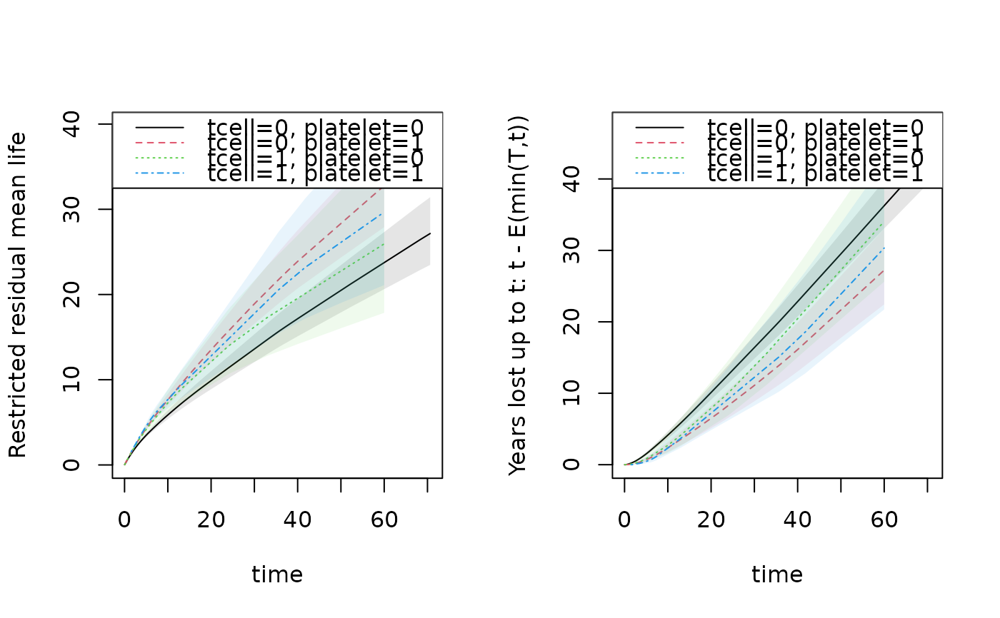

Computes the Restricted Mean Survival Time (RMST) for stratified Kaplan-Meier or stratified Cox models with martingale standard errors.
Value
An object of class "resmean_phreg" containing:
- rmst
Matrix of restricted mean survival times.
- se.rmst
Standard errors for RMST.
- intkmtimes
Restricted mean at specified times.
- years.lost
Years lost (if applicable).
Details
The standard error is computed using linear interpolation between standard errors at jump-times. This allows plotting the restricted mean as a function of time.
Years lost can be computed based on this and decomposed into years lost for different causes
using the cif_yearslost function.
Examples
data(bmt)
bmt$time <- bmt$time + runif(408) * 0.001
out1 <- phreg(Surv(time, cause != 0) ~ strata(tcell, platelet), data = bmt)
rm1 <- resmean_phreg(out1, times = 10 * (1:6))
summary(rm1)
#> strata times rmean se.rmean lower upper
#> tcell.0..platelet.0 0 10 5.863311 0.2565986 5.381352 6.388434
#> tcell.0..platelet.1 1 10 7.631940 0.3423876 6.989530 8.333394
#> tcell.1..platelet.0 2 10 7.277630 0.7092737 6.012185 8.809426
#> tcell.1..platelet.1 3 10 7.670121 0.5624603 6.643279 8.855681
#> tcell.0..platelet.0.1 0 20 9.888933 0.5393873 8.886301 11.004691
#> tcell.0..platelet.1.1 1 20 13.506436 0.8000250 12.026012 15.169102
#> tcell.1..platelet.0.1 2 20 12.103046 1.5545505 9.409442 15.567737
#> tcell.1..platelet.1.1 3 20 12.787711 1.4675899 10.211843 16.013325
#> tcell.0..platelet.0.2 0 30 13.602921 0.8315433 12.066976 15.334370
#> tcell.0..platelet.1.2 1 30 18.901263 1.2693285 16.570199 21.560255
#> tcell.1..platelet.0.2 2 30 16.191227 2.4006087 12.108086 21.651302
#> tcell.1..platelet.1.2 3 30 17.766066 2.4422087 13.570037 23.259562
#> tcell.0..platelet.0.3 0 40 17.160422 1.1236264 15.093611 19.510246
#> tcell.0..platelet.1.3 1 40 23.883656 1.7373008 20.710200 27.543387
#> tcell.1..platelet.0.3 2 40 19.549274 3.2030820 14.179606 26.952379
#> tcell.1..platelet.1.3 3 40 22.433278 3.3838434 16.691571 30.150067
#> tcell.0..platelet.0.4 0 50 20.483891 1.4110947 17.896778 23.444989
#> tcell.0..platelet.1.4 1 50 28.330704 2.1961739 24.337327 32.979331
#> tcell.1..platelet.0.4 2 50 22.746077 4.0536978 16.040187 32.255487
#> tcell.1..platelet.1.4 3 50 26.115614 4.2306924 19.011080 35.875146
#> tcell.0..platelet.0.5 0 60 23.743838 1.7038298 20.628597 27.329528
#> tcell.0..platelet.1.5 1 60 32.771230 2.6865754 27.906894 38.483449
#> tcell.1..platelet.0.5 2 60 25.942880 4.9475921 17.851911 37.700896
#> tcell.1..platelet.1.5 3 60 29.671581 5.1599228 21.101618 41.722050
#> years.lost
#> tcell.0..platelet.0 4.136689
#> tcell.0..platelet.1 2.368060
#> tcell.1..platelet.0 2.722370
#> tcell.1..platelet.1 2.329879
#> tcell.0..platelet.0.1 10.111067
#> tcell.0..platelet.1.1 6.493564
#> tcell.1..platelet.0.1 7.896954
#> tcell.1..platelet.1.1 7.212289
#> tcell.0..platelet.0.2 16.397079
#> tcell.0..platelet.1.2 11.098737
#> tcell.1..platelet.0.2 13.808773
#> tcell.1..platelet.1.2 12.233934
#> tcell.0..platelet.0.3 22.839578
#> tcell.0..platelet.1.3 16.116344
#> tcell.1..platelet.0.3 20.450726
#> tcell.1..platelet.1.3 17.566722
#> tcell.0..platelet.0.4 29.516109
#> tcell.0..platelet.1.4 21.669296
#> tcell.1..platelet.0.4 27.253923
#> tcell.1..platelet.1.4 23.884386
#> tcell.0..platelet.0.5 36.256162
#> tcell.0..platelet.1.5 27.228770
#> tcell.1..platelet.0.5 34.057120
#> tcell.1..platelet.1.5 30.328419
e1 <- estimate(rm1)
par(mfrow = c(1, 2))
plot(rm1, se = 1)
plot(rm1, years.lost = TRUE, se = 1)

## Comparing populations
rm1 <- resmean_phreg(out1, times = 40)
e1 <- estimate(rm1)
estimate(e1, rbind(c(1, -1, 0, 0)))
#> Estimate Std.Err 2.5% 97.5% P-value
#> [tcell=0, platelet=0].... -6.723 2.069 -10.78 -2.668 0.001156
#> ────────────────────────────────────────────────────────────
#> Null Hypothesis:
#> [tcell=0, platelet=0] - [tcell=0, platelet=1] = 0
#>
#> chisq = 10.5593, df = 1, p-value = 0.001156